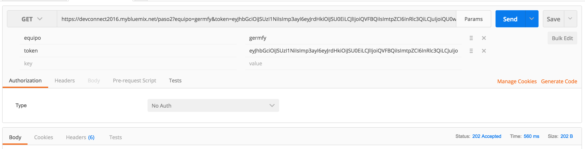
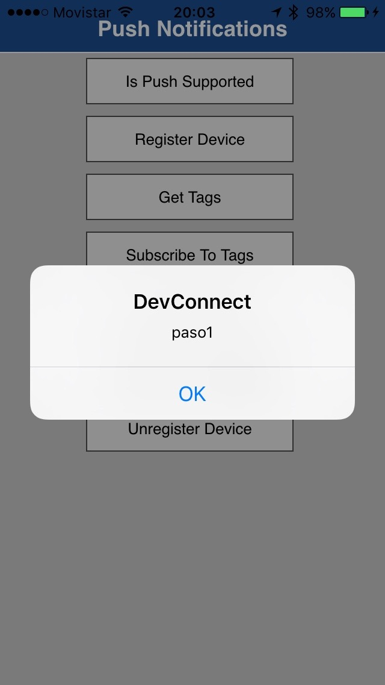

Como lo habíamos dicho anteriormente https://devconnect2016.mybluemix.net es tu punto principal de contacto, una vez que tengas tu token de seguridad, será necesario que desde tu invocador de APIs (Postman, curl, SoapUI, RestClient, Poster, etc), invocar la URL de donde obtendrás la pista, por ejemplo https://devconnect2016.mybluemix.net/paso_de_ejemplo en formato REST con GET, con los siguientes parámetros en la URL: equipo (el nombre de equipo que has ingresado en la aplicación de tu dispositivo móvil) y el token de seguridad que has generado en el paso anterior.
Esta invocación ejemplo se vería así:
El mensaje que recibirás te indicará la URI que utilizarás en el navegador en https://devconnect2016.mybluemix.net
Nota importante:Este será el formato de pasos que seguirán en el resto del reto, validarás tu descubrimiento en el invocador de APIs con la URI, y el mensaje que recibas, será la URI en el navegador para conseguir las siguientes instrucciones. El mensaje que recibirás será como el siguiente:
Con este mensaje, lo siguiente sería introducir en el navegador: https://devconnect2016.mybluemix.net/paso1 para obtener las instrucciones para el siguiente paso.